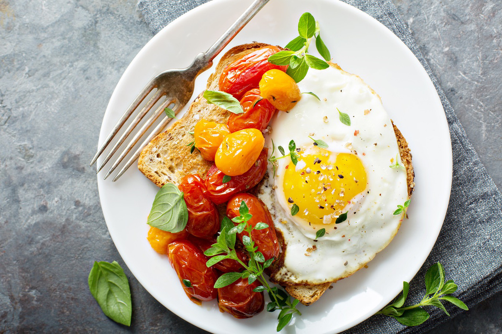
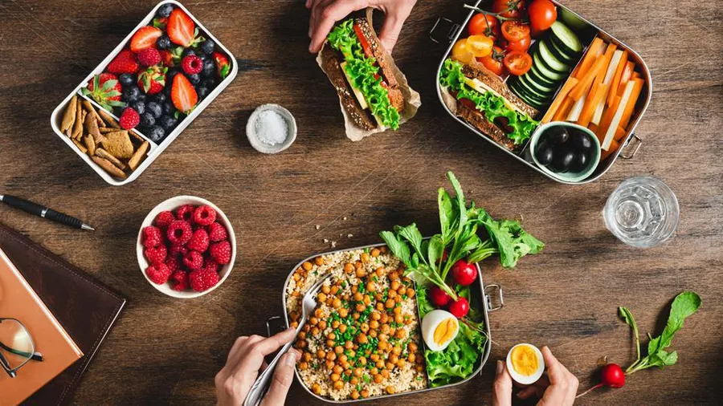

Perfect Time To Have Your Meals
Breakfast |

Never skip breakfast.
Ideal time of having breakfast is between 7am-9am.
Don't have it later than 10am.
Lunch |

There should be a gap of at least 3 to 4 hours between breakfast and lunch.
Ideal time of having lunch is 12pm - 2pm.
Don't have it later than 4pm.
Dinner |

Maintain a gap of at least 3 to 4 hours between lunch and dinner.
Ideal time of having dinner is between 6pm - 9pm.
Don't have it later than 10pm.
It's good to have it 3 hours before going to bed.
« Previous